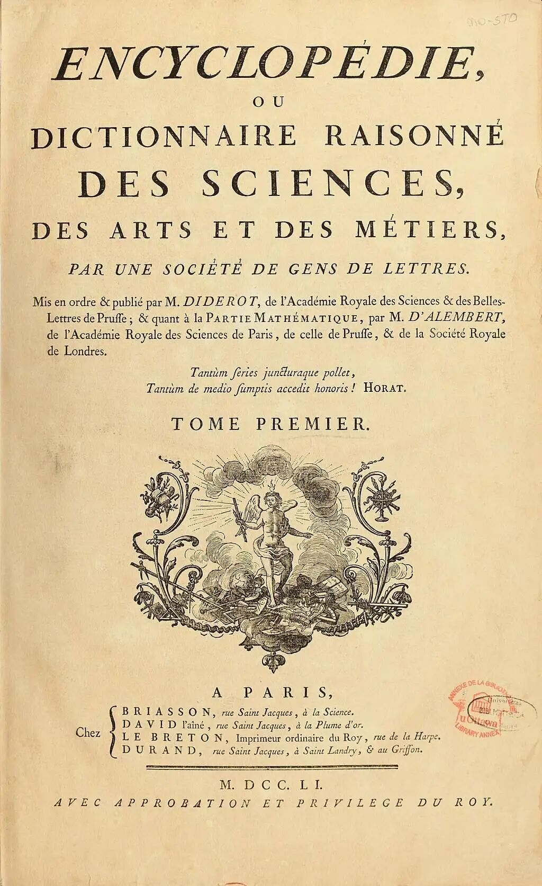
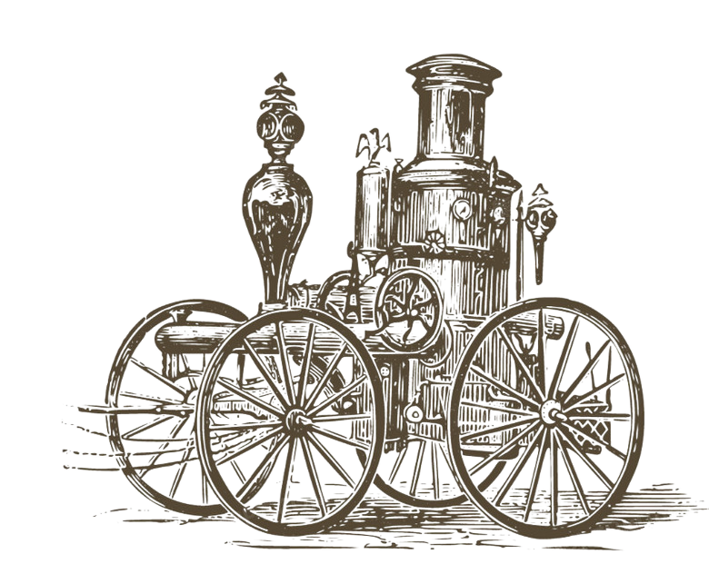
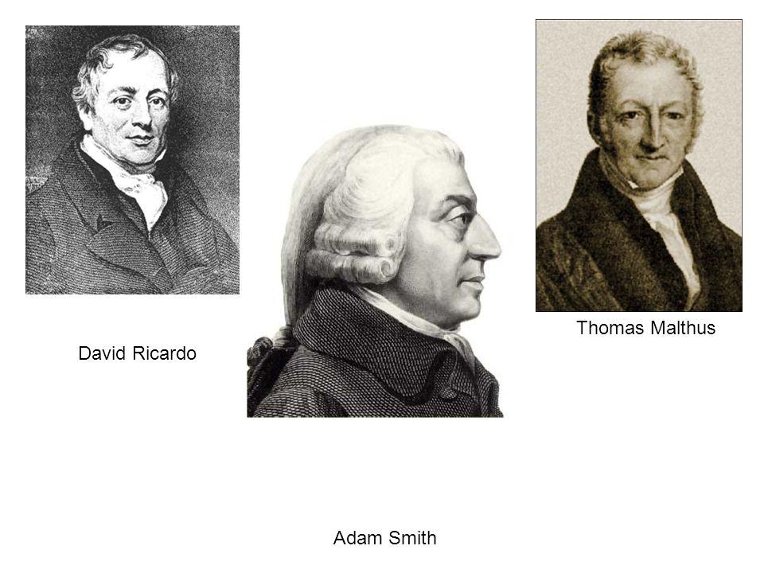
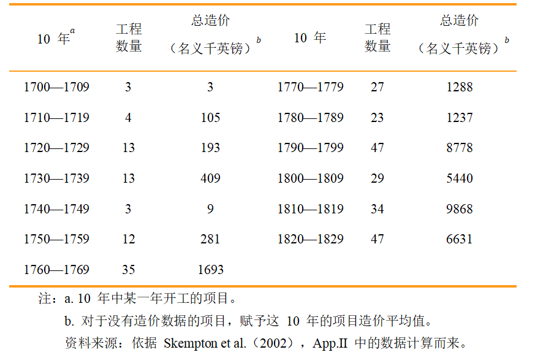
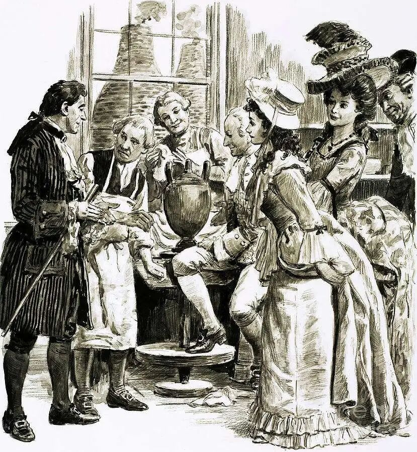

“工业革命不是蒸汽时代、棉花时代、或者钢铁时代。它是进步时代。” ——迪尔德丽·麦克洛斯
1751年夏日的巴黎，空气中弥漫着油墨与野心交织的气息。启蒙思想家狄德罗（Denis Diderot）与达朗贝尔（Jean le Rond d'Alembert）主编的《百科全书，或科学、艺术和工艺详解词典》第一卷终于付梓，这部后来被誉为“启蒙运动圣经”的巨著，以优雅的皮革封面包裹着其颠覆性的内核。首版2000册迅速被贵族、学者和社会新富人士争购一空，尽管书价相当于普通工人半年的薪水。

图1 《百科全书或科学、艺术和⼯艺详解词典》，狄德罗与达朗贝尔主编
在“工坊”词条中，狄德罗写下这样的按语："当学者放下身段观察工匠的工作，当工匠开始用理性思考自己的技艺，社会的真正进步就开始了。"两位皓首穷经的作者无法预见的是，他们所定义的这种精神将会在不久的未来渗透到工业革命的核心地带：月光社成员达尔文（Erasmus Darwin）的书架上就摆放着法语原版《百科全书》，其孙子查尔斯·达尔文后来将同样的实证精神带入生物学；乔赛亚·韦奇伍德（Josiah Wedgwood）在改进陶瓷工艺时，多次引用书中关于高温窑变的化学分析。更深远的影响在于，全书贯穿的"进步可计算"理念除了呼应了培根关于“有用的知识”的标准以外，也为后来的工厂管理制度提供了思想范式。

谁最先感知道这场革命的到来？
经济学家吗？令人尴尬的是，古典政治经济学家三巨头——亚当·斯密、托马斯·马尔萨斯和大卫·李嘉图——尽管身处这场变革的核心时代，却像是置身风暴眼一样，完全没有意识到即将到来的巨变。斯密在《国富论》中详细讨论了分工和市场规模，却对正在发生的技术革命只字未提；马尔萨斯专注于人口与资源的静态关系，未能预见生产力即将实现的飞跃；李嘉图的地租理论更是建立在农业生产率不变的假设之上。

图2 古典政治经济学家三巨头
如果说工业革命是经济史的永恒主题，那么它的存在让经济学家群体无地自容，因为它的出现与这门自诩为洞悉经济规律的学问无关，甚至一无所知。说真的，有什么贡献的话，那就是经济学家托马斯·艾阿顿（ashton）在让“工业革命”这个充满了歧义和错误的术语变得广为人知。这次预测的失败甚至导致经济学界形成了某种“革命预测癖”，时至今日，经济学家的词典里充斥着互联网革命、数字革命、AI革命、生物技术革命……，他们生怕再次错过了什么，而采取“遍历”的方式偏执地试图预言各种经济革命的发生，好似在弥补最初的失误。
如果不是经济学家，那么是谁最先感知到了这场"革命"的来临？历史上的蛛丝马迹告诉我们：是那些身处生产一线的实业家和发明家们。
1767年，英国陶瓷大王乔赛亚·韦奇伍德在致朋友的一封信中预言：“一场‘革命即将来临’。”这位将科学方法引入陶瓷生产，曾将自己生产的瓷器进献给乾隆皇帝的实业家，敏锐地察觉到了技术变革带来的产业巨变。近半个世纪后，苏格兰商人帕特里克·科洪在1815年的记述中印证了这一预言：“在过去30年，大英帝国制造业取得了巨大的进步，令人叹为观止。它的速度……令人难以置信。蒸汽机得到改进，不过更重要的是，在资本和技能的激励下，制造精巧的机器为毛纺织业和棉纺织业提供种种便利，这一切是无法计量的。”同年，制造商和慈善家罗伯特·欧文也记录道："各种制造品遍及整个国家，赋予它的居民新的特性……这一变化主要归功于将棉花贸易引入该国的机械发明……这一制造业现象的直接影响是大英帝国的财富、产业、人口、政治影响力得以迅速提升。"
这些来自实践前沿的观察揭示了一个重要事实：工业革命首先是一场生产方式的革命，其次才是经济结构的变革。

什么是工业革命？
它是一场率先出现在英国，而后跨国英吉利海峡蔓延至欧洲大陆技术革新的浪潮。这是工业革命最为人所熟知的一面，它总是和哈格里夫斯、凯伊、瓦特以及克莱普顿等发明家的名字联系在一起。这场创新的浪潮确实是史无前例的，它让人类一举冲破了马尔萨斯陷阱的束缚。
这场技术革新由⼀连串成功的、前所未有的创新组成。首先出现在棉纺织业（如珍妮纺纱机、水力纺纱机），接着蔓延到其他纺织领域；随后是冶铁、玻璃、陶瓷等材料行业；最后扩展到能源生产和应用领域。值得注意的是，这些发明往往是相互关联、互为条件的。正如经济史学家莫基尔指出的：“工业革命不是由几个孤立的重大发明推动的，而是由一系列相互强化的技术创新构成的网络。”棉纺织业的机械化催生了对更强大动力源的需求，从而推动了蒸汽机的改进；而蒸汽机的普及又反过来促进了冶铁技术的发展，形成了一种良性的技术共生关系。
伟大的数学家和哲学家阿尔弗雷德·诺斯·怀特黑德（Alfred North Whitehead）在1830年以深邃的笔触写到：“19世纪最伟大的发明是发明了发明的方法，其次是研发、改良和微调发明，使之切实提高了生产力和经济福利。”
然后，硬币从来不止一面。工业革命还有另一个常被浪漫化叙述所掩盖的阴暗面。工厂制度的建立虽然创造了前所未有的生产力，但也带来了深刻的社会创伤。
第一代工业无产阶级在污秽的街道和拥挤不堪的住房中艰难度日；儿童和妇女不得不在危险的工厂环境中长时间工作；传统的手工业者被迫加入雇佣劳动大军，失去了原有的独立性。卡尔·波兰尼在《大转型》中深刻描述了这一过程：“市场经济的崛起伴随着对社会关系的彻底重构，人被异化为劳动力商品。”
图3 工业区污秽的街道和困苦的工人
无产者的悲惨境遇激发了文艺创作的悲悯之心。查尔斯·狄更斯在《双城记》开篇的经典描述完美捕捉了这个矛盾的时代精神：
It was the best of times, it was the worst of times.
那是最好的年代，也是最糟的年代。
It was the season of light, it was the season of darkness.
那是光明的时节，也是黑暗的时节。
It was the spring of hope, it was the winter of sadness.
那是希望的春季，也是悲伤的冬日。
该诗歌的最后一句“他们相信什么事情都不会改变”的断言，既是对旧制度卫道士的讽刺，也暗示了即将到来的翻天覆地的变化。狄更斯笔下的"文学伦敦"成为这个转型时代的永恒象征，记录着技术进步与人道代价之间的深刻撕扯。
工业革命的第三个面目最让人感到困惑。经典经济理论一再证明，技术进步是经济增长的源泉。但是工业革命早期的确也有一丝罗伯特·索罗所提出的“生产力悖论”的蹊跷——任何地方都能看到机器的轰鸣，唯独在生产力统计看不到。蒸汽动力作为通用技术（GPT）的经典案例，确实是英国实现经济增长和提高生产力的主要原因，但这基本上是1850年之后才发生的事情——距离首台蒸汽机问世已有一个多世纪。直到1830年代，蒸汽动力才真正广泛应用于运输业。
许多其他重大发明也存在着类似的滞后效应：亚伯拉罕·达比的焦炭炼铁技术（1712年）经过数十年才显现出全部影响；埃德蒙·卡特赖特的动力织机（1785年）直到19世纪初才广泛采用。
根据安特拉斯和沃斯2003年的研究表明，之所以会出现这种滞后现象，是因为重大发明通常需要一系列配套的小发明和改进才能真正发挥潜力。在工业革命初期（1760-1800年），生产率和经济增长的变化微乎其微，几乎可以忽略不计。真正的经济腾飞要到19世纪中叶才显现出来。看来，即使是“革命”，也需要付出一代人时间的漫长等待。

工业启蒙的微观证据
尽管按照权威经济史学家阿什顿的观点，工业革命的典型时期是1780年到1830年，但这场变革绝非一夜之间发生。在宏观数据尚无明显变化的情况下，一系列微观证据已经预示着革命的前奏。乔尔·莫基儿在《启蒙经济》一书中详尽梳理了发生在专利申请、图书出版、基础设施投资以及金融领域所透露出来的工业端倪。
英国的专利数量在1757年左右出现了明确无误的转折点：在18世纪40年代和50年代，每年取得的平均专利数量仅为8.5件和9.9件；到60年代这一数字跃升至22.1件；到80年代更增至51.2件。这种指数级增长反映了技术创新活动的加速。
出版业也呈现出类似趋势：18世纪上半叶，英国每年图书出版数量维持在1000种左右；到1790年，这一数字已增至3000种。知识传播的速度和广度发生了质的飞跃。
基础设施投资同样显著增加：18世纪30年代，收费道路的申请数量为25件；40年代为38件；到了50年代和60年代则骤升至170件。交通网络的改善为全国性市场的形成创造了条件。
金融领域的变化同样惊人：银行数量从1750年的10家左右剧增到1800年的近400家。信贷扩张为工业投资提供了必要资金。
甚至企业破产数据也反映了经济活动的增强：在1711年至1760年间，英国每年的破产案件数量变化不大，平均为209起；但到了18世纪80年代，这一数字就增至539起；90年代英国遭遇金融恐慌时，破产数量进一步激增。这种"创造性破坏"的过程正是经济活力的体现。
最有力的证据或许来自土木工程投资：1700年至1820年间，英国土木工程项目的数量和造价呈现出结构性增长。以十年为单位计算，工程数量从1700年代的3个增加到1790年代的47个，同期总投资从微不足道的3英镑飙升至8,778英镑（名义值）。这种数量级的增长绝非偶然波动所能解释。

图4 1700—1829年土木工程项目
当然，也有学者对工业革命的显著性提出质疑。克拉克（1985年）等人认为，工业革命基本上只是经济史学家建构的叙事，被钢铁和棉花产业的指数增长所蒙蔽，实际上对大多数人而言只是渐进的小变化。
然而，这种怀疑论无法解释一个基本事实：启蒙时代的确发生了一些史无前例的变化，这些变化不仅限于特定行业，而是渗透到整个社会的知识生产和技术应用方式中。专利、出版、基建、金融等领域的数据共同描绘了一幅全面转型的图景，远非“渐进小变化”能够概括。

伟大的友谊
无论人们将启蒙运动视为文化断裂还是一个承前启后的连续发展的过程，不可否认的是，经过启蒙运动的洗礼，英国经济和技术精英阶层的精神世界发生了根本转变。这种转变构成了工业革命最重要的思想背景。
知识分子与生产者之间的交流并非工业革命时期的新现象。林·怀特在《中世纪技术与社会变迁》中指出，中世纪的修道士是"首批不介意指甲缝里沾着泥土的知识分子"。16-17世纪，这种界限进一步模糊，科学家日益关注实际问题，特别是在占星术和炼金术领域。
但启蒙时代将这种交流提升到了前所未有的高度，表现为三种典型的互动模式：
第一种模式是"学者型企业家"的兴起。在思想进步的制造商和工程师队伍中，越来越多的人展现出强烈的求知欲和对进步的追求。曼彻斯特棉纺厂厂主乔治·李率先在工厂采用煤气照明，被罗伯特·欧文誉为"当时最具科学精神的人"。陶瓷大王韦奇伍德的合作伙伴托马斯·本特利精通多国语言，是著名的沃灵顿不信奉国教者学院的创始人。德比郡的工厂主威廉·斯特拉特不仅受过良好教育，还是经验丰富的建筑师和热力工程专家，最终因其成就入选英国皇家学会，能够从工厂走进科学的殿堂，这对制造商而言是极为罕见的荣誉。

图5 约西亚-韦奇伍德和托马斯-本特利制作六个黑色花瓶
第二种模式是学者与实业家的深度合作。瓦特与化学家约瑟夫·布莱克的友谊堪称典范：布莱克不仅为瓦特提供了关键的热力学理论支持，还为陶瓷工、柏油生产商、铅矿主等提供专业咨询服务。类似的，电报先驱威廉·库克与物理学教授查尔斯·惠斯通的合作，工程师威廉·费尔贝恩与数学家伊顿·霍奇金的配合，都体现了理论与实践的创造性结合。
第三种模式是科学家直接参与发明创造。本杰明·富兰克林、汉弗里·戴维等科学家拒绝利用发明牟利，而是将成果贡献给社会。这种"为知识而知识"的启蒙精神，与技术应用的实用主义形成了富有成效的社会辐射力。
成立于1765年左右的伯明翰月光社（Lunar Society）是这种知识融合的最佳体现。这个由企业家、科学家和发明家组成的非正式团体，包括陶瓷制造商韦奇伍德、蒸汽机改良者瓦特、化学家普里斯特利、医生兼诗人伊拉斯谟斯·达尔文等杰出人物。他们每月在满月之夜聚会，以便会后借着月光回家——这个浪漫的细节暗示了启蒙时代特有的理性与激情交融的精神状态。

结语
如果仅仅把工业革命理解为一些发明的集合，那就太过狭隘了。在这个灿烂而喧嚣的时代来临之前，社会的智识环境已经发生了深刻变化。人们对待知识的态度、学习的方法、生成新技术的过程都在悄然“进化”。这意味着工业革命首先是一种思维方式的革命，其次才是技术或经济的革命。
芝加哥大学的经济史学家迪尔德丽·麦克洛斯基洞悉了这一点：“工业革命不是蒸汽时代、棉花时代、或者钢铁时代。它是进步时代。”